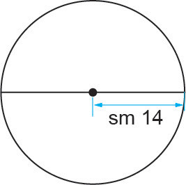

Kazi ya kufanya ya pili
Kutumia Pai kutafuta mzingo wa duara
Hatua
1.
Tumia futi kamba kupima na kurekodi kipenyo cha tairi la baiskeli.
2.
Tafuta mzingo wa tairi la baiskeli kwa kutumia kanuni:
Mzingo = πd
3.
Tumia chaki kuweka alama ya mahali pa kuanzia kwenye tairi la baiskeli.
4.
Zungusha kamba kwenye tairi kutoka kwenye alama mpaka utakapoifikia alama hiyo tena ili kupata mzunguko mmoja kamili.
5.
Pima urefu wa kamba uliyoitumia katika hatua ya 4.
6.
Linganisha jibu ulilopata kwenye hatua namba 5 na lile ulilopata kwenye hatua namba 2. Umegundua nini?
Kwa hiyo, mzingo wa duara = π × d.
Zingatia: Mzingo wa nusu duara unatafutwa kwa kuchukua nusu ya mzingo wa duara kujumlisha na kipenyo:
kwa hiyo, mzingo wa nusu duara = πd/2 + d.
Mfano wa kwanza
Tafuta mzingo wa duara lenye nusu kipenyo cha sm 14. Tumia π = .
Njia

sm 14
C = 2πr
= 2 × × sm 14
= sm 88
Kwa hiyo, mzingo wa duara ni sm 88.